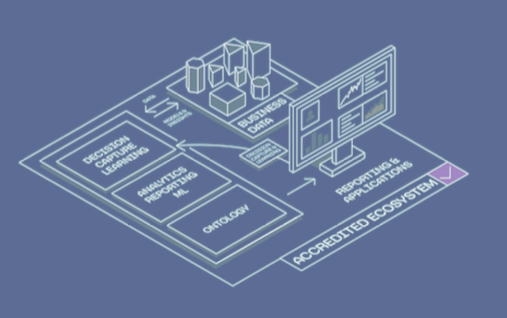

任务管理器
帮助政府机构安全地加速软件供应商的入驻、部署和管理。
生态系统

将创新、传统及非传统软件供应商快速接入 Palantir 基于 Kubernetes 的安全生态系统。
政府管理员对所有已部署的服务和软件版本保留完整的监督与管理权。
为您的项目量身定制
任务管理器具备充分的灵活性，能够适应政府项目的特定需求。
联系我们以获取更多信息，了解我们如何帮助您满足任务需求。
核心优势
网络安全
全面提升运营的安全与效率
自动化安全与风险管理：简化人工审批流程，确保实施稳健的自动化安全控制。
减轻 ISSO 与 AO 负担：最大限度减少引入新应用所需的工作量与步骤。
加速交付：加快关键任务部署的进度。
零信任多租户计算：确保多个租户间的稳固安全。
持续监控与交付
获取实时洞察与运营效率
Apollo 洞察：实时掌握 CVE、STIG 等安全动态。
快速入驻与退出：高效管理供应商工作负载。
加速高侧环境交付：在几天内即可在关键任务环境中启用应用程序。
全面监督与透明度：对部署情况和风险面保持完整的可见性，以保障运营就绪并为决策提供支持。
分布式数据架构
增强数据集成与边缘能力
本体 / SDK：利用全面的本体和 SDK 增强数据管理能力。
对等与联邦：将能力无缝扩展至边缘端。
即时连接现有数据层：确保与当前数据基础设施的无缝集成。
集中式身份管理与数据安全
在组织内部精简身份与访问保护
用于 ICAM 的 Multipass：使用 Multipass 实施稳健的身份与访问管理。
OIDC 集成：通过 OIDC 与现有 IdP 实现无缝的供应商集成。
通用数据访问：简化并保障组织内的数据访问安全。
高级访问控制：利用基于属性的访问控制 (ABAC) 和基于角色的访问控制 (RBAC) 保障数据安全。
随处部署，即刻运行
多功能且安全的部署，即刻实现运营就绪
通用部署：兼容所有云服务商及本地环境。
广泛的安全合规性：满足 FedRAMP High、IL5、IL6 及更高级别网络 ATO 等严格的要求。
经过运营验证：受 CDAO、SOCOM 及陆军未来司令部等机构信赖。
开放标准
利用开放标准实现无缝集成与运营
Kubernetes：通过容器编排优化运营。
Helm Charts：简化 Kubernetes 部署。
REST API：与现有系统无缝集成。
OIDC：通过 OpenID Connect 精简身份管理。
OAuth：为应用程序提供安全的授权。
任务管理器彻底改变了美国政府机构引入和管理创新技术的方式。它提供了无与伦比的灵活性、安全性和互操作性，使我们的联邦合作伙伴能够专注于实现其关键任务目标。